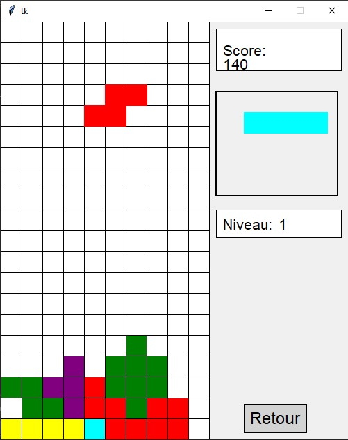

Traces et Preuves d'apprentissage
Voici le recueil de mes preuves attestant de ma capacité à analyser formellement des algorithmes et à résoudre des problèmes de performance dans des applications réelles.

Analyse Algorithmique
Preuve d'apprentissage : Étude formelle et réduction drastique de la complexité sur des problèmes mathématiques (Fibonacci, Hanoï).
Analyser cette preuve ➔
Projet Tetris (Python)
Preuve d'apprentissage : Identification et résolution d'une fuite de mémoire critique entraînant le ralentissement du jeu.
Analyser cette preuve ➔